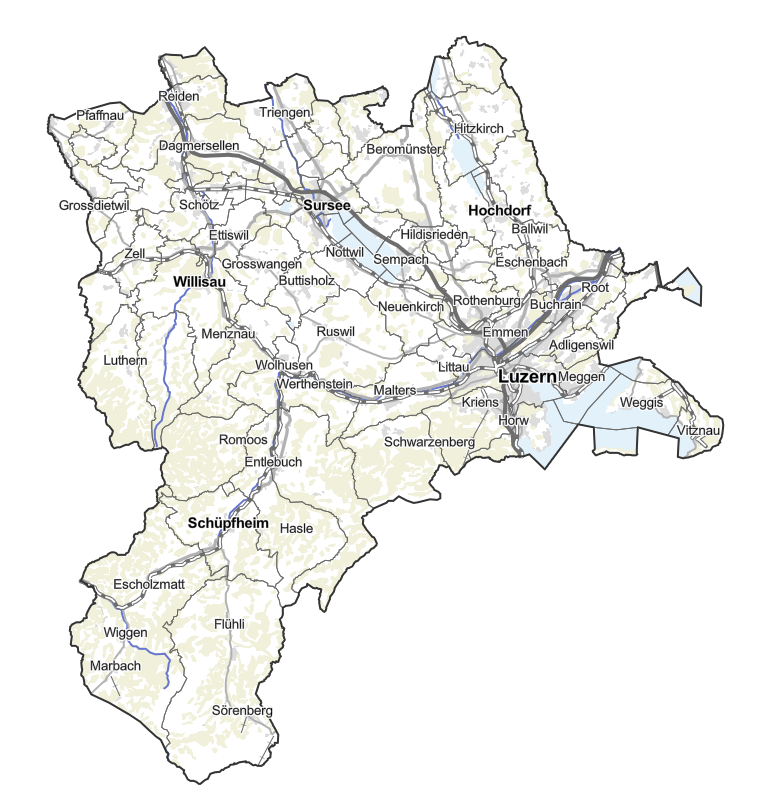
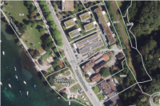

JavaScript is required in order to use this app

Energieplanung
magnifying_glass icon from the IconExperience.com I-Collection. Copyright by INCORS GmbH (www.incors.com).
Text löschen
navigate_cross icon from the IconExperience.com I-Collection. Copyright by INCORS GmbH (www.incors.com).
recycle icon from the IconExperience.com I-Collection. Copyright by INCORS GmbH (www.incors.com).
navigate_cross icon from the IconExperience.com I-Collection. Copyright by INCORS GmbH (www.incors.com).
recycle icon from the IconExperience.com I-Collection. Copyright by INCORS GmbH (www.incors.com).
navigate_open icon from the IconExperience.com I-Collection. Copyright by INCORS GmbH (www.incors.com).
schliessen
navigate_plus icon from the IconExperience.com I-Collection. Copyright by INCORS GmbH (www.incors.com).
navigate_minus icon from the IconExperience.com I-Collection. Copyright by INCORS GmbH (www.incors.com).
map_roads icon from the IconExperience.com I-Collection. Copyright by INCORS GmbH (www.incors.com).
Karteninhalt
navigate_minus icon from the IconExperience.com I-Collection. Copyright by INCORS GmbH (www.incors.com).
Neue Energieplanung
Massnahmen (Punkte)
Massnahmen (Linien)
Massnahmen (Flächen)
navigate_plus icon from the IconExperience.com I-Collection. Copyright by INCORS GmbH (www.incors.com).
EPA-Karte
navigate_plus icon from the IconExperience.com I-Collection. Copyright by INCORS GmbH (www.incors.com).
EPA-Indikatoren
navigate_plus icon from the IconExperience.com I-Collection. Copyright by INCORS GmbH (www.incors.com).
Gültige räumliche Energieplanungen
information icon from the IconExperience.com I-Collection. Copyright by INCORS GmbH (www.incors.com).
navigate_plus icon from the IconExperience.com I-Collection. Copyright by INCORS GmbH (www.incors.com).
navigate_minus icon from the IconExperience.com I-Collection. Copyright by INCORS GmbH (www.incors.com).
list_style_bullets icon from the IconExperience.com I-Collection. Copyright by INCORS GmbH (www.incors.com).
Legende
Neue Energieplanung
Massnahmen (Punkte)
Massnahmen (Linien)
Massnahmen (Flächen)
navigate_plus icon from the IconExperience.com I-Collection. Copyright by INCORS GmbH (www.incors.com).
navigate_minus icon from the IconExperience.com I-Collection. Copyright by INCORS GmbH (www.incors.com).
printer icon from the IconExperience.com I-Collection. Copyright by INCORS GmbH (www.incors.com).
Drucken
navigate_plus icon from the IconExperience.com I-Collection. Copyright by INCORS GmbH (www.incors.com).
navigate_minus icon from the IconExperience.com I-Collection. Copyright by INCORS GmbH (www.incors.com).
share icon from the IconExperience.com I-Collection. Copyright by INCORS GmbH (www.incors.com).
Teilen & Tools
Messen
tape_measure2 icon from the IconExperience.com I-Collection. Copyright by INCORS GmbH (www.incors.com).
Strecke
vector_square icon from the IconExperience.com I-Collection. Copyright by INCORS GmbH (www.incors.com).
Fläche
chart_spline icon from the IconExperience.com I-Collection. Copyright by INCORS GmbH (www.incors.com).
Höhenprofil
navigate_open icon from the IconExperience.com I-Collection. Copyright by INCORS GmbH (www.incors.com).
schliessen
navigate_open icon from the IconExperience.com I-Collection. Copyright by INCORS GmbH (www.incors.com).
schliessen
recycle icon from the IconExperience.com I-Collection. Copyright by INCORS GmbH (www.incors.com).
navigate_cross icon from the IconExperience.com I-Collection. Copyright by INCORS GmbH (www.incors.com).
Daten: Digitale Geländemodelle 2018
navigate_cross icon from the IconExperience.com I-Collection. Copyright by INCORS GmbH (www.incors.com).
